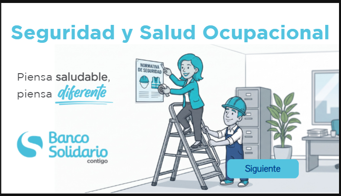
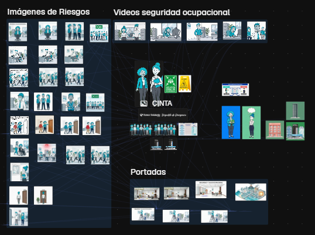
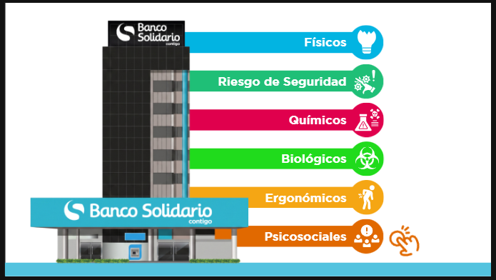
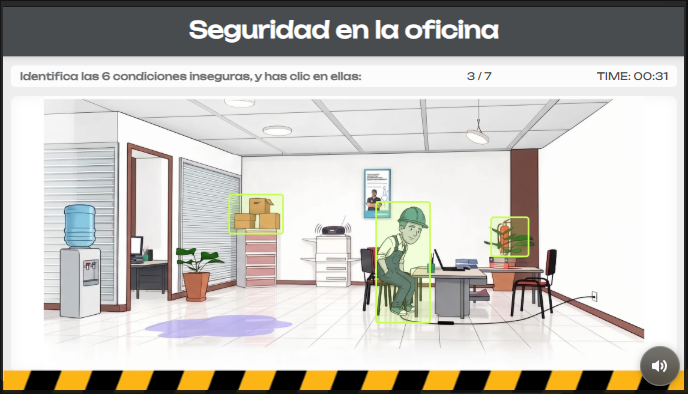
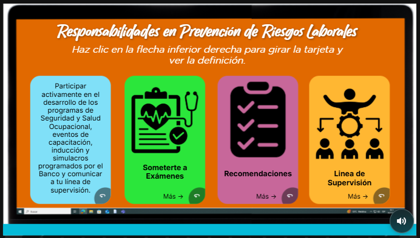

Diseño capacitaciones para empresas. El cliente me entrega el contenido, y mi trabajo es convertirlo en una experiencia que la gente quiera recorrer. La mayoría de cursos corporativos son presentaciones o videos hablados: el colaborador solo mira y avanza, y la información se olvida rápido.
Mi propuesta es lo opuesto: cursos interactivos y gamificados, con personajes propios, videos y actividades en las que la persona participa, explora y pone a prueba lo que aprende.
Cada curso pasa por las mismas etapas, desde entender el tema hasta entregar una experiencia lista para publicar:
Todo el material gráfico del curso lo creo yo: personajes, ambientes, portadas, fondos y videos. Para producirlo uso Magnific, trabajando con un sistema de nodos que conecta cada recurso con sus referencias.

Espacio de trabajo en Magnific: imágenes de riesgos, videos, personajes y portadas conectados por nodos.
Trabajar con nodos me permite mantener la coherencia visual: los mismos personajes aparecen con el mismo estilo en cada escena, video y portada, para que el curso se sienta como una sola historia y no como una colección de imágenes sueltas.
En lugar de una lista larga de conceptos, la información se divide en partes que el colaborador descubre a su ritmo. Aquí, los seis tipos de riesgo laboral se presentan sobre el edificio del banco: físicos, de seguridad, químicos, biológicos, ergonómicos y psicosociales. Cada categoría tiene su color e ícono, y al hacer clic se abre su explicación.

Los tipos de riesgo divididos en botones interactivos.
La teoría se pone a prueba con actividades. En "Seguridad en la oficina", el colaborador tiene que encontrar las condiciones inseguras escondidas en una escena ilustrada, haciendo clic sobre ellas contra el reloj.

Actividad para identificar riesgos de seguridad ocupacional.
Incluso la información más formal se presenta en piezas cortas e interactivas. Las responsabilidades en prevención de riesgos laborales se muestran como tarjetas que giran: el colaborador lee el título, hace clic y descubre la definición.

Tarjetas giratorias con las responsabilidades del colaborador.
Un curso de Seguridad y Salud Ocupacional que se recorre como una experiencia y no como una presentación: personajes con los que el colaborador se identifica, información que se descubre con clics y actividades que convierten la teoría en práctica.
Por confidencialidad no puedo mostrar el curso completo. Estas pantallas muestran las ideas con las que diseño cada capacitación para que sea interactiva y gamificada.